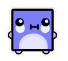

About Me
Hi, I'm Kensukeken!
You might know me as Ken, Kenzy, Akira, or Kokichi, depending on the server—typically on Discord. None of these are my real name unless we've met in person. My pronouns are she/her. I'm a painter, a programmer, and a lifelong learner. Welcome to my personal website, where I showcase my work and share my thoughts.
My love for creativity and technology drives everything I do. Fluent in Turkmen, Arabic, and Turkish, I bring a unique cultural perspective to my work.
Hobbies
When I'm not coding or painting, you can often find me immersed in games like Geometry Dash, osu!catch, chess, Roblox, Heart of Tibet, Giza, and Danganronpa V3. I've been playing Geometry Dash since 2015, and it’s still one of my favorites. If you're curious about more of my gaming adventures, feel free to check out my Steam profile linked below.
Aside from gaming, I'm passionate about creating new projects, exploring fresh ideas, and learning different technologies. I also love working with LaTeX, which helps me present my work in a clean, professional way. Whether it's through code, art, or games, I always strive to create something meaningful.
Languages


Kensukeken (She/Her)
Painter Artist and Programmer

Fluent in 🇹🇲, 🇸🇦, 🇹🇷
Loves Geometry Dash since

My Favorite Activities on Discord Servers


Listen To My Playlist on Spotify!
My Playlist description
This playlist features a mix of my favorite genres, blending upbeat rhythms with soulful melodies. I love how these songs reflect my taste for diverse music, from energetic tracks that keep me motivated to more relaxed tunes for unwinding. Each track is handpicked to match different moods, whether I'm studying, working out, or just chilling.
- Energetic Beats: Songs that pump up the energy, perfect for working out or getting things done.
- Chill Vibes: Relaxing tracks that help me unwind after a long day.
- Lyric-Driven: Songs with meaningful lyrics that resonate with me.
- Genre Variety: A mix of pop, indie, electronic, and alternative tracks to keep things interesting.